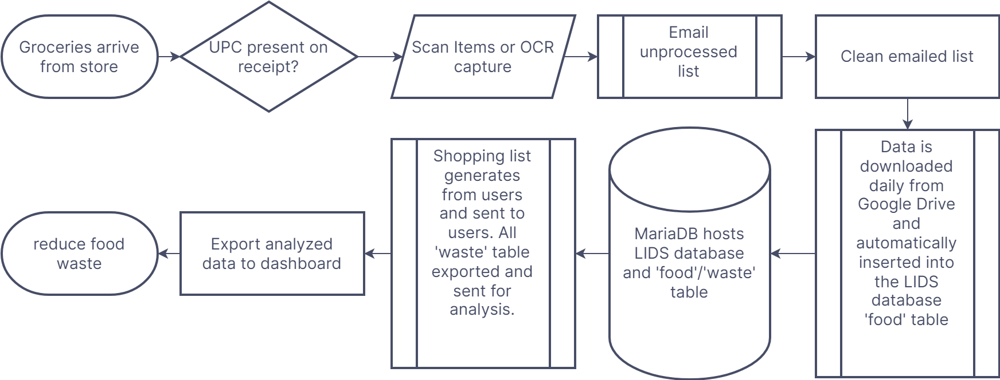
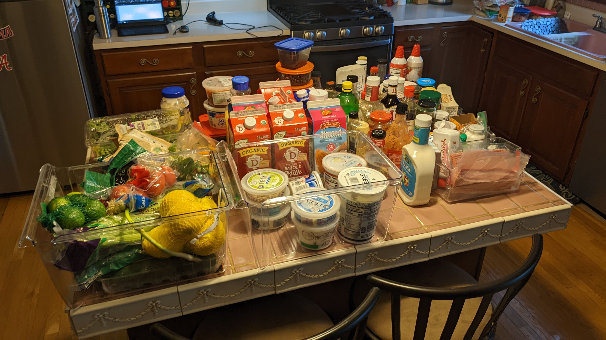
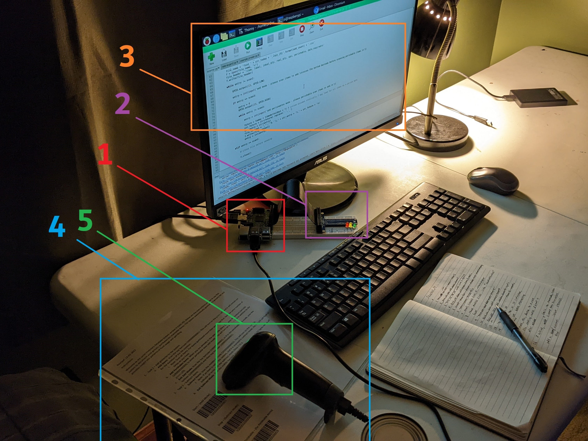

Local Inventory Database System for Pantry and Fridge

Problem
A Typical American tosses nearly a ton of garbage away every year or 5 pounds a day. Roughly 20% of that waste is food at the consumer level. I thought it would be cool to try to manage the inventory of my house, and the pantry seemed like a good place to start as any, with the added benefit of reducing waste in everyday consumption which would be enabled through this project.
Approach
I was split between using an arduino and a Raspberry Pi 3, both of which I had at the beginning of the project, however, after losing way too many hours to troubleshooting the ESP8266 ESP-01 wifi module attempting to flash the apparently faulty chips, (not to be confused with the ESP 8266 ESP-12E), I decided firmly on using the Raspberry Pi.
This ended up being a better decision for a number of reasons, mainly that I could just set up a Python environment, connect to the wifi with a WLAN dongle instead of having to connect a Arduino each time. I used a LAMP stack for my server to host the database on my local network, and instead of MySQL, I used MariaDB. The flowchart below is a simplified on from the whiteboard original it is based on.
The resulting flowchart comes from a slightly more detailed whiteboard version, and the version here represents a compressed version of that.
I emptied my pantry and fridge contents to do the painful first step of counting it all.
labeling/naming every item pantry was done by hand, then barcode scanner. There are libaries of Universal Product Codes (UPC) which could help with scanning. Sadly, most of the free options I tried are greatly limited, and the remaining ones were behind a paywall, and I did not try those. so once I had entered my list, I scanned to make my own library.
It should be noted that this project is not currently operational, but if it were the two biggest hurdles to overcome would be the initial entry and the "exit" entry or counting use in a way that's not more hassle than the original problem so if anyone seeks to take up this project for professional or personal applications, I would love to know the approach or scenario that bypasses these problems.
I tried a few things before I landed on the below configuration for my database shown in the image below. Each element is described in the list under the image.

- Use a Raspberry Pi 3 which is currently hooked into all the peripherals including monitor, keyboard, mouse, and scanner, but it is currently running ‘headless’ or without everything but the monitor.
- The T-cobbler and ribbon connects the LED circuit to the GPIO pins on the Raspberry Pi.
- On the monitor is the Python code that does 3 main things: It scans items in or out, adds to the database, and sends the weekly data and grocery list to the end user.
- The instructions give the user a reminder on what to do in each use-case, but in the long run, it serves by having the barcodes that turn LIDS on and off add/subtract modes and whether an item perished or is marked as perishable.
- The scanner is the one piece of hardware I had to buy in addition to the Raspberry Pi which was purchased on amazon.com for about $20.
Solution
For the curious, the project code Repo is linked below on GitHub which includes the "checkin/checkout" program, the email script, and everything else.
The sheet with the barcodes shows what a user sees, which I explain in more detail in the video below.